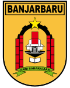

KOTA BANJARBARU

Kota Banjarbaru adalah salah satu kota dan sekaligus menjadi ibu kota dari provinsi Kalimantan
Selatan,
Indonesia. Status Banjarbaru sebagai ibu kota provinsi Kalimantan Selatan telah ditetapkan,
menggantikan
Kota Banjarmasin, berdasarkan Undang-Undang Nomor 8 Tahun 2022.[4] Berjarak sekitar 33 km dari Kota
Banjarmasin, sebelumnya kota ini merupakan pemekaran dari Kabupaten Banjar, dan sebagian besar
wilayahnya merupakan Kawedanan di dalam Kabupaten Banjar, yang kemudian dimekarkan sebagai sebuah
kota
pada tahun 1999.[5]
Kota Banjarbaru berdiri pada tanggal 20 April 1999 dan memiliki luas wilayah 371,38 km². Seluruh
wilayah
Kota Banjarbaru merupakan bagian dari kawasan metropolitan Banjarbakula. Kota Banjarbaru terbagi
atas 5
kecamatan dan 20 kelurahan, dengan jumlah penduduk pada pertengahan 2024 sebanyak 278.318 jiwa.[2]
Indeks Pembangunan Manusia atau IPM tahun 2023 di Kota Banjarbaru merupakan yang tertinggi di
provinsi
Kalimantan Selatan, yakni 81,25.[3]
Klik
ini untuk melihat di Google Maps!
SEJARAH
Wilayah ini, dulunya adalah perbukitan di pinggiran Martapura yang dikenal dengan nama Gunung
Apam.
Daerah Gunung Apam dikenal sebagai daerah peristirahatan buruh-buruh penambang intan selepas
menambang
di Cempaka. Daerah Cempaka itu sendiri merupakan kawasan pemukiman Suku Banjar yang tertua
di
Kota
Banjarbaru.
Pada era tahun 1950-an, Gubernur Kalimantan Dr. Murdjani dibantu seorang perencana D.A.W Van
der
Pijl
merancang Banjarbaru sebagai Ibukota bagi Provinsi Kalimantan, sampai akhirnya Kalimantan
dimekarkan
menjadi 4 provinsi pada tahun 1957. Namun pada perjalanan selanjutnya, perencanaan ini
terhenti
sampai
pada perubahan status Kota Banjarbaru menjadi Kota Administratif.
Kota Banjarbaru berdiri berdasarkan Undang-Undang Nomor 9 Tahun 1999. Lahirnya undang-undang
tersebut
menandai berpisahnya Kota Banjarbaru dari Kabupaten Banjar yang selama ini merupakan daerah
administrasi
induk. Kota Banjarbaru yang sebelumnya berstatus sebagai Kota Administratif, sempat
berpredikat
sebagai
Kota Administratif tertua di Indonesia.
Pelantikan Akhmad Fakhrulli sebagai pejabat Walikota Kota Banjarbaru oleh Menteri Dalam
Negeri
Syarwan
Hamid, di Jakarta, pada 27 April 1999, menandakan resminya alih status Kota Banjarbaru dari
Kota
Administratif menjadi Kotamadya (Kota). Kota Banjarbaru memperoleh status kota setelah
menyandang status
kota administratif terlama di Indonesia, 23 tahun, merupakan momen bersejarah. Adalah DPRD
Kota
Banjarbaru melalui pemilihan Walikotanya, memilih Rudy Resnawan sebagai Walikota pertama
Kota
Banjarbaru, menggantikan Fakhrulli sebagai Walikota transisional.